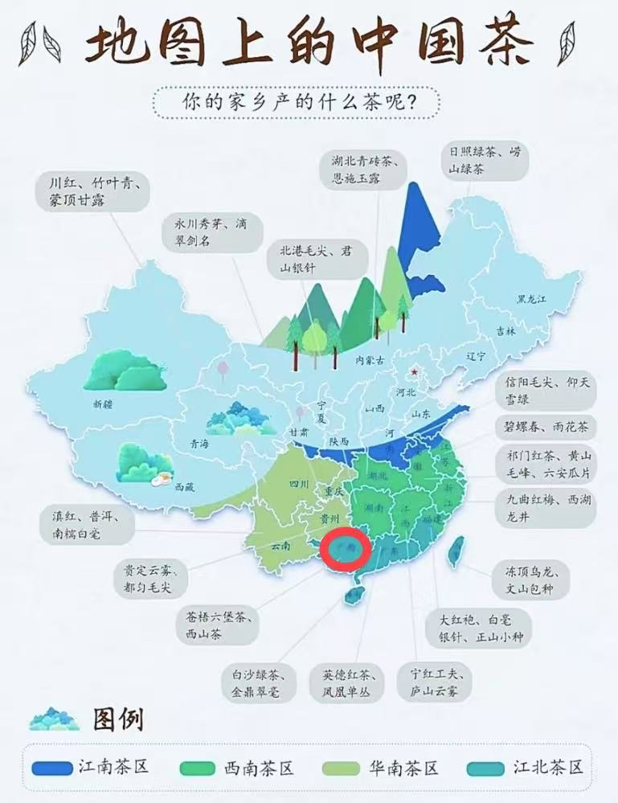
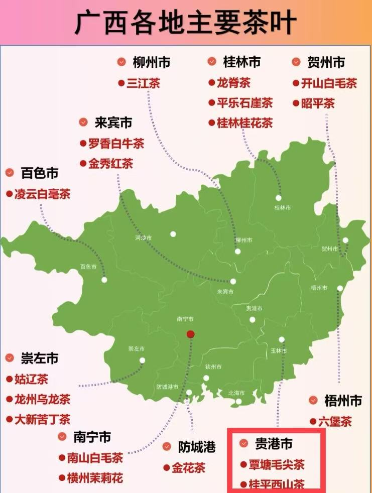

|
 Guiping City Guangxi Zhuang Autonomous Region
|
The origin of Xishan Tea lies in the picturesque Guiping City, nestled within the Guangxi Zhuang Autonomous Region of China. This serene locale, blessed with fertile lands and a temperate climate, provides the perfect environment for the cultivation of this esteemed tea variety. Known for its meticulous processing techniques and rich, distinctive flavor, Xishan Tea has been celebrated for centuries as a hallmark of Chinese tea culture. The region's dedication to preserving traditional methods and its commitment to quality have made Xishan Tea a renowned and sought-after beverage worldwide. |
 The location of Xishan Tea on the map of Guangxi
|
Originating from the western mountains of Guiping City in Guangxi, China, Xishan Tea is a celebrated variety known for its exquisite flavor and historical significance. Nestled in a fertile and temperate region, the tea plants thrive in the cool, misty conditions, benefiting from natural irrigation from mountain streams. The meticulous processing techniques employed by local tea makers further enhance the tea's distinct aroma and flavor. Renowned for its delicate taste and health benefits, Xishan Tea has become a favorite among tea enthusiasts worldwide.
|
|---|
|
If you are a travel enthusiast. |
For travel enthusiasts, Xishan Tea offers an intriguing allure. Its unique origin in the serene western mountains of Guiping City, Guangxi, China, presents a scenic backdrop that is as enchanting as the tea itself. The journey to the tea fields, amid lush greenery and breathtaking views, offers an immersive experience that blends nature and culture. The opportunity to learn about the traditional tea-making process and sample the delicate, refreshing tea only adds to the allure, making a visit to the Xishan Tea region a must for travelers seeking authenticity and a taste of local heritage. |
If you are a tea enthusiast. |
For tea enthusiasts, Xishan Tea holds a special allure. Its rich history and origins in the picturesque western mountains of Guiping City, Guangxi, China, promise an authentic tea experience unlike any other. The tea's delicate aroma and flavor, a result of the meticulous processing techniques employed by local artisans, captivate the senses. The opportunity to savor this exquisite tea, steeped in tradition and crafted with passion, offers tea lovers a glimpse into the region's cultural heritage and a taste of excellence. |
|---|